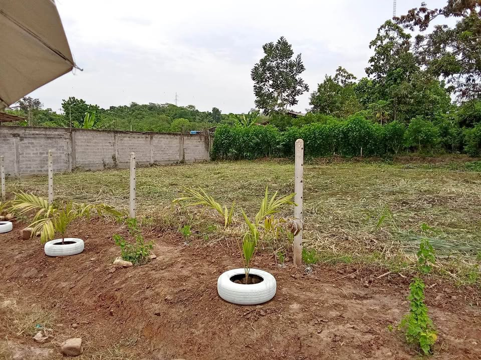

Precio desconocido 12.784 ha

Vendo Terreno en Esquina de 1278.36 m2, inscrita en registros públicos, En Las Palmas - Tarapoto a 12 minutos del centro de Tarapoto, Perfecto para Hotel Turístico( a diferencia de los hoteles que están en las palmas que se ubican a 15 minutos de La pista y el camino es trocha) , restaurante,hacer casas de campo para ventas, bungalows, la propiedad está rodeada de Casas de Campo Hermosas, centros para eventos, canchas de pádel, y a una cuadra del restaurante La casita del Horno y de la pista. Precio Negociable